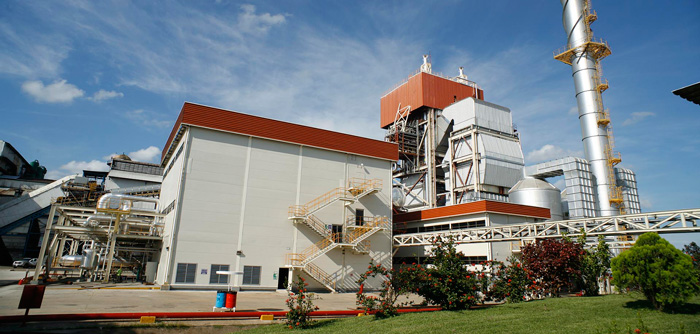
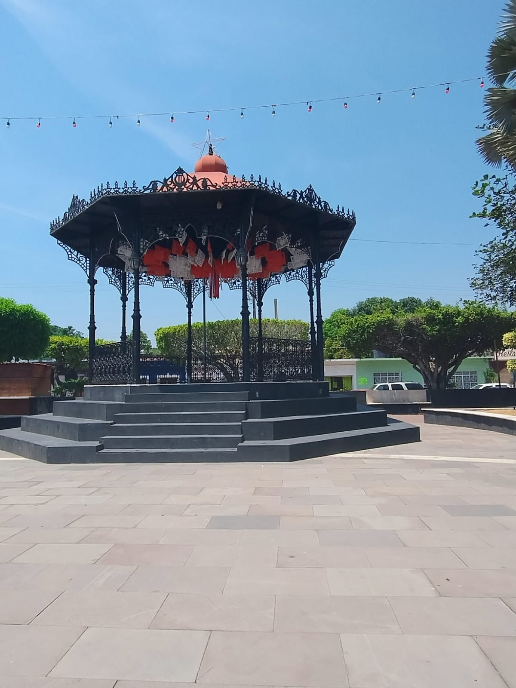

<
lugares turisticos de tres valles
unos de los lugares turisticos de tres valles es el ingenio es de ser un punto de interes para quienes se interesan por la industria azucarera o la
economia regional.El ingenio se descata por su capacidad de molienda de caña y su contribucion a la economia local,ya que es un ejemplo de la importancia
de las indusrias locales para el desarrollo economico.


El parque Miguel Hidalgo es un atractivo turistico por su naturaleza como espacio verde central,ideal para pasear, disfrutar de actividades
al aire libre y conectar con el entorno natural .
Ademas, el parque puede ser un lugar acogededor para picnis y actividades recreativas familiares.